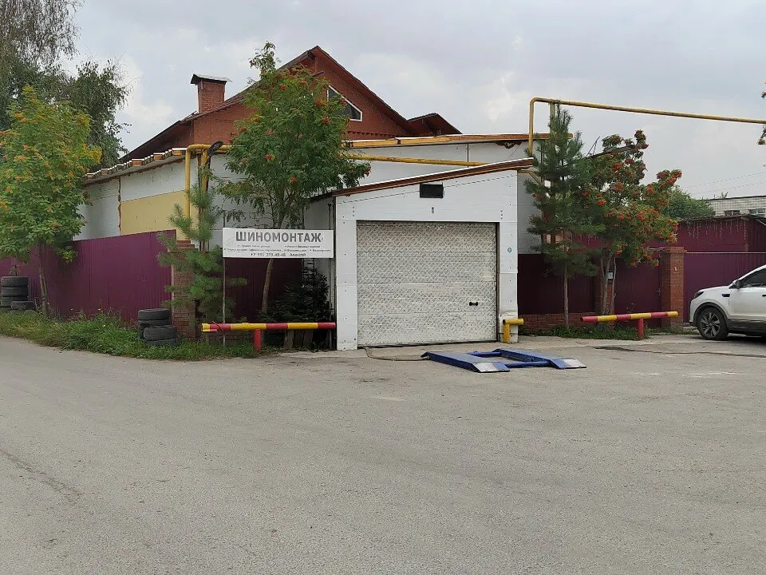
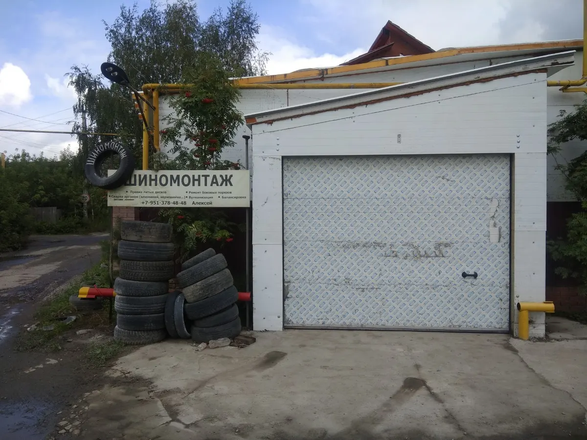
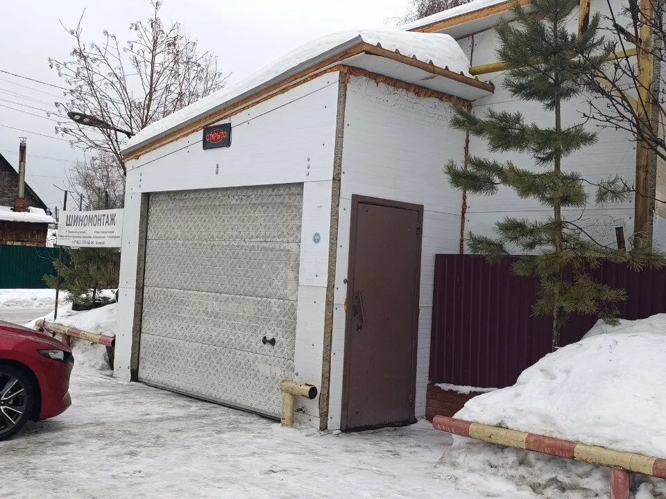
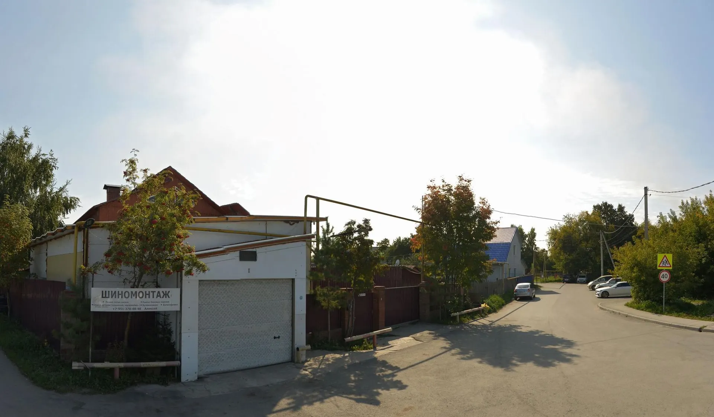
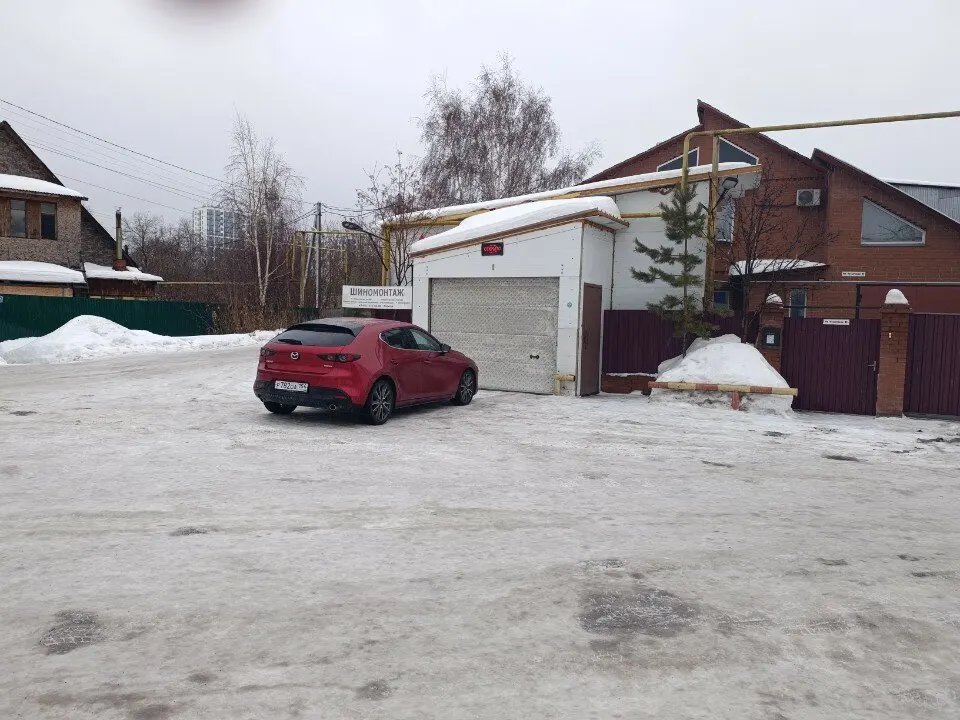
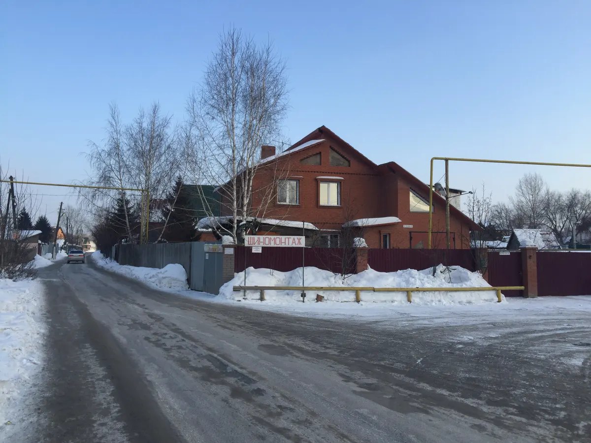

Шиномонтаж · Новосибирск
Шиномонтаж на Чулымской: переобувка по записи и хранение шин
1-я Чулымская, 85 - ежедневно с 9:00 до 20:00. Сезонная переобувка на удобное время, балансировка, правка литых дисков, сварка аргоном, хранение шин. Запись в WhatsApp или по телефону.
- Ежедневно с 9:00 до 20:00
- Запись на удобное время
- Хранение шин и правка дисков

Услуги
Услуги - с вывески на фото и из отзывов на Яндекс.Картах. Стоимость уточняйте у мастера по телефону или в WhatsApp.
Шиномонтаж
- Сезонная переобувказапись на удобное времяуточнить
- Балансировкауточнить
- Ремонт колёсуточнить
- Ремонт боковых порезовуточнить
- Вулканизацияуточнить
Диски и хранение
- Правка литых дисковуточнить
- Сварка аргономалюминий, нержавейкауточнить
- Сезонное хранение шиншинный отельуточнить
Цену уточните в WhatsApp или по телефону: напишите радиус колёс и что нужно сделать.
Как это проходит
- 01
Записываетесь на время
Пишете в WhatsApp или звоните - выбираете день и время. "Если записался на 9:00 значит и обслужат именно в это время", - пишет Anton Statnikov.
- 02
Приезжаете без очереди
"Предварительно записываюсь на удобное время и нет проблем с очередями", - Ekaterina Sh., отзыв на Картах.
- 03
Переобувают быстро
"Работают сообща и быстро. Чем-то даже напомнило пит-стоп формулы 1", - пишет ПIT.
- 04
Шины - на хранение
"Порадовал шинный отель, не нужно тащить грязные шины домой", - Сергей Данилов.





За что хвалят на Картах
Быстро и качественно
"Уже четвертый год здесь переобуваюсь и всегда восторг", - Анна Галянская.
Шинный отель
"Шины хранятся в прохладном месте, без перепадов температур, в отличие от балкона", - Наталья Монакова.
Правка дисков и сварка
"Выправили диски+сварка, полный комплект услуг шиномонтаж", - Наталья Монакова.
Дельные советы
"Если что дают хорошие и дельные советы", - Дмитрий Ц.
Отзывы с Яндекс.Карт
«Скажу одно-зря я сомневался) Ребята приличные, трезвые, грамотные, работают сообща и быстро. Чем-то даже напомнило пит-стоп формулы 1) Записался на время и четко переобулся. Оборудование хорошее, отношение душевное. В общем искренне рекомендую всем,кто не знает или сомневатся.»
ПIT · 2 мая 2023
«Собственник Алексей просто красавчик. Неоднократно переобуваюсь именно у него. Быстро, качественно и доступно по деньгам. Так держать! Рекомендую данный сервис.»
Евгений Б. · 7 декабря 2022
«Качественное обслуживание даже в разгар сезона! Порадовал шинный отель, не нужно тащить грязные шины домой )))»
Сергей Данилов · 13 ноября 2022
Отзывы с карточки на Яндекс.Картах, без правок.
Частые вопросы
Нужна ли запись?
Клиенты пишут, что записываются на удобное время и обходятся без очередей. Запись - по телефону или в WhatsApp.
Есть ли хранение шин?
Да, сезонное хранение: шины лежат в прохладном месте, без перепадов температур.
Правите диски?
Да: правка литых дисков и сварка аргоном (алюминий, нержавейка), ремонт колёс и боковых порезов.
Сколько это стоит?
Стоимость уточняйте у мастера: позвоните по номеру +7 (951) 378-48-48 или напишите в WhatsApp.
Где вы находитесь?
Новосибирск, 1-я Чулымская улица, 85, ежедневно с 9:00 до 20:00. Остановка "Улица Ясный Берег, 43" - 420 метров.
Запишитесь на удобное время - напишите или позвоните
- Адрес
- 1-я Чулымская ул., 85, Новосибирск
- Часы
- Ежедневно 9:00 - 20:00
- Телефон
- +7 (951) 378-48-48